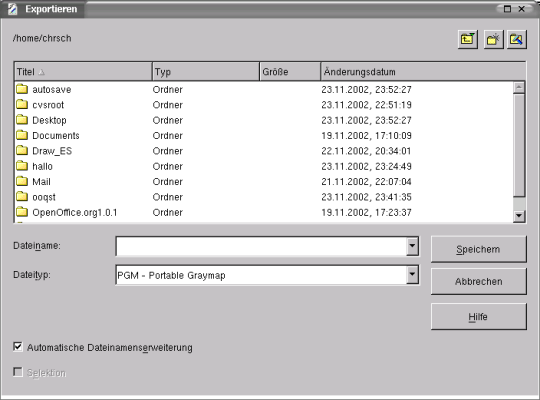
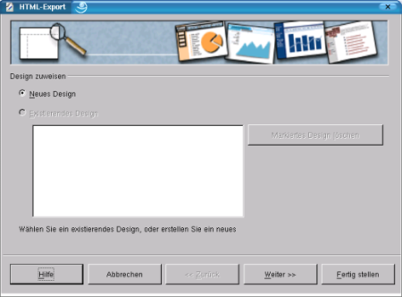
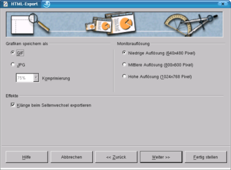
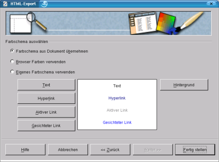

| [zurück] | [Hauptmenü] | [weiter] |
| [PDF] | ||
Speichern von Zeichnungen

Abbildung
1: Exportieren
Mit einem Klick auf die Schaltfläche
„Speichern“
speichert OpenOffice.org die Datei im Standardformat *.sxd. Möchten
Sie nun die Datei ein anderes Format (z.B. gif, tiff, png bzw. jpg)
exportieren, so gehen Sie ins Menü Datei
- Exportieren.... In dem darauf folgenden Dialog können
Sie das gewünschte Dateiformat auswählen.
Es stehen folgende Dateiformate zur Auswahl:
|
Dateiformat |
Erweiterung |
|---|---|
|
Website |
text/html Bilder als *.jpg, *.gif |
|
Windows Bitmap |
*.bmp |
|
Encapsulated Postscript |
*.eps |
|
Enhanced Metafile |
*.emf |
|
Grafik Interchange FileFormat |
*.gif |
|
Joint Photographic Experts Group |
*.jpg |
|
Potable Bitmap |
*.pbm |
|
Portable Greymap |
*.pgm |
|
Portable Pixelmap |
*.ppm |
|
Scaleable Vectorgrafix |
*.svg |
|
Tagged Image File Format |
*.tiff |
|
X-Pixmap |
*.xpm |
|
Star View Metafile |
*.svm |
|
Windows Metafile |
*.wmf |
|
Mac Pict |
*.pct |
|
Sun Raster Image |
*.ras |
|
Portable Network Grafik |
*.png |
|
OS/2 Metafile |
*.met |
Tabelle 1: Grafik Exportformate

Abbildung
2: HTML-Export
Wenn Sie als Speicherformat Website
auswählen, dann erscheint der Dialog „HTML-Export“.
Auf der zweiten Seite haben Sie dann die Auswahl zwischen verschiedenen HTML-Formaten:
Standard HTML-Format
Frameset
Automatisch
Webcast

Abbildung
3: HTML-Export, Grafikeinstellungen
Wählen Sie nun Standard-HTML-Format aus.
Sie kommen nach einem Klick auf „Weiter“
zur Auswahl der Grafik-Formate. Hier können Sie zwischen GIF und
JPEG wählen.
Zusätzlich können sie noch die Monitorauflösung und bei JPEG die Komprimierung festlegen.

Abbildung
4 HTML-Export, Layouteinstellungen
Auf der nächsten Seite geben Sie dann die
Seiteninformation ein wie z.B: E-Mail-Adresse, Name, Homepage, Titel,
Infos. Als nächstes kommt die Auswahl der Schaltflächen
(Buttons) und als letztes die Auswahl des Farbschemas .
Wenn Sie die anderen Grafikformate als Exportformat wählen, müssen Sie vor dem Speichern noch die Optionen festlegen. Folgende Tabelle informiert über die möglichen Optionen:
|
Grafikformat |
Optionen |
|
|---|---|---|
|
BMP |
Farbauflösung: Original |
1-Bit-Schwellenwert 1-Bit gedithert 4-Bit Graustufen/Farbpalette 8-Bit Graustufen/Farbpalette 24-Bit Echtfarben |
|
Auflösung |
24-600 dpi |
|
|
Größe |
Frei einstellbar |
|
|
EPS |
Vorschau |
Tiff und Interchanged |
|
Version |
Level1 und Level2 |
|
|
Farbformat |
Graustufen und Echtfarben |
|
|
Kompression |
LZW oder keine |
|
|
GIF |
Modus |
Interlaced ja/nein |
|
Grafikobjekte |
Transparent ja/nein |
|
|
JPEG |
Qualität |
1-100% frei wählbar |
|
Farbauflösung |
Graustufen und Echtfarben |
|
|
emF, MET, PICT, WMF |
Modus |
Größe oder Original |
|
PBM, PGM, PPM |
Format |
Binär oder Text |
|
RAS, SVG, TIFF, XPM |
Keine |
Keine |
Tabelle 2: Grafikexport, Formatoptionen